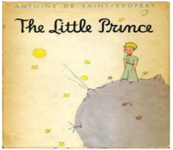

As the little prince dropped off to sleep, I took him in my arms and set out walking once more.
I felt deeply moved, and stirred.It seemed to me that I was carrying a very fragile treasure.
It seemed to me, even, that there was nothing more fragile on all Earth.
In the moonlight I looked at his pale forehead, his closed eyes, his locks of hair that trembled in the wind, and I said to myself:
"What I see here is nothing but a shell. What is most important is invisible...”
As his lips opened slowly with the suspicion of a half-smile, I said to myself, again:
"What moves me so deeply, about this little prince who is sleeping here, is his loyalty to a flower--the image of a rose that shines through his whole being like the flame of a lamp, even when he is asleep..."
And I felt him to be more fragile still.
I felt the need of protecting him, as if he himself were a flame that might be extinguished by a little puff of wind...